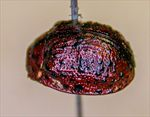
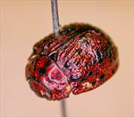
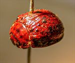
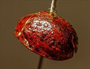
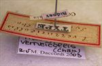
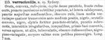

Click on images to enlarge
.jpg){kind=link}

Fig. 1. Paropsis verrucicollis type specimen
.jpg){kind=link}

Fig. 2. Paropsis verrucicollis type specimen
.jpg){kind=link}

Fig. 3. Paropsis verrucicollis type specimen
.jpg){kind=link}

Fig. 4. Paropsis verrucicollis type specimen
.jpg){kind=link}

Fig. 5. Paropsis verrucicollis type specimen, labels
{kind=link}

Fig. 6. Paropsis verrucicollis, description
Name
Paropsis verrucicollis Chapuis, 1877
Corresponds to
T. verrucicollis does not correspond to any species known to the author.
Diagnosis and Notes
Blackburn (1896), while not having seen an authentic type specimen, deals with P. verrucicollis as part of his 'subgroup ii' (i.e., those species without "strongly marked characters", whose greatest height is not or scarcely in front of the middle of the elytral margin and whose elytra are depressed under the humeral callus). Within that group, he characterises it as:
A. Inner edge of humeral callus distinctly nearer to lateral margin of elytra than to suture;
B. Sides of prothorax more or less explanate;
C. Elytra not having well-defined continuous costae;
D. Puncturation of the elytra not particularly fine;
E. Upper surface of elytra in general, or at least the verrucae, black or nearly so;
FF. Explanate margins of prothorax much narrower [less than about 1/3 of width of discal part];
GG. Median verrucae of prothorax tuberculiform.
This looks at first glance a little like Ta05, though the type (using Chapuis' size measurement) would be on the extreme lower end of size for that species and the estimated HCE/BL ratio is too small. Chapuis' description implies well-developed rugulosity/verrucae on the pronotum, and this is not usually the case for Ta05. Ta201 is another candidate, with a rather rugulose pronotum, though ventrally it is not at all black in the single specimen that I have.
Type specimen
Location: RBINS
Label data: /“Sidney”/ “Coll. Chapuis”/ “TYPE”/ “P. verrucicollis Chp”/ “Type”/ “Trachymela verrucicollis (Chap) ref. M. Daccordi 2003”/.
Female. HCE/BL: ~ 16.5% (estimated from an approximately lateral view photo).
Original description
Translation of original description (Figure 6) by ChatGPT, 04/2026:
Ovate, convex, reddish-pitchy; head densely punctate, the frons reddish; pronotum very sparsely and finely punctate, at the sides somewhat depressed, with larger punctures confluent; obscure reddish, with a median line and four warts placed transversely before the middle, black; scutellum convex, black; elytra strongly punctate-striate, with punctures somewhat irregular, the interspaces irregular, unequal, near the base convex, toward the apex, as elsewhere, tuberculate, obscurely reddish, variegated with blackish-pitchy; underside of the body and legs pitchy-black. Length 7 mm. Sydney.
References
Chapuis, F. 1877, "Synopsis des espèces du genre Paropsis", Annales de la Société Entomologique de Belgique (Comptes-rendus), vol. 20, 67-101 (page 95).
Copyright © 2026. All rights reserved.